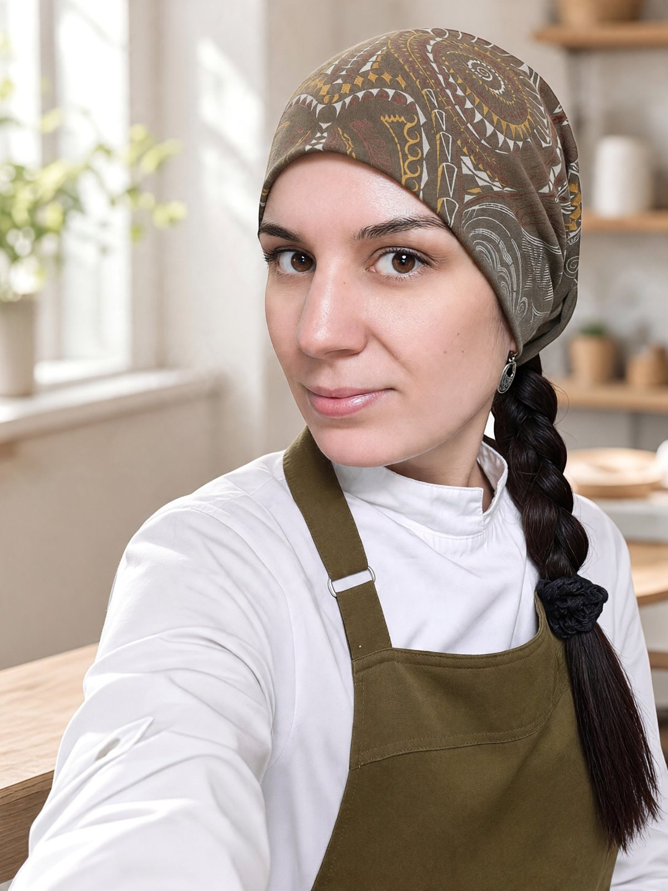

Открытие и обновление десертного направления
Разработка десертного меню, рецептуры, запуск. Помощь при открытии заведения или смене линейки.
Помогаю отелям, ресторанам и кафе открыть или обновить десертное направление: ассортимент, рецептуры, запуск, обучение команды. В профессии с 2016 года. Частные заказы на торты и десерты не принимаю.
На фото: мои разработки. Торты, зефир, маршмеллоу, начинки для моти

Работаю кондитером с 2016 года: в ресторанах, отелях и кафе Владивостока, Москвы, Сочи и Краснодара. На шведских линиях трёх отелей Сочи отрабатывала большой ассортимент, а в нескольких местах разрабатывала ассортимент и рецептуры для заведения.
Образование: повар-кондитер (колледж, 2008). Несколько лет работала в полиграфии и фотомастерских, поэтому этот сайт и все фотографии для него я сделала сама.
Позиции, которые готовила
Торты: Арабика, Три шоколада, Шоколадное чудо, Чёрный лес, Опера, Каро, Эстерхази, Апшерон, Медовик, Наполеон.
Чизкейки: баскский, с халвой, горячий.
Торты: Медовик, Пчёлка, Сметанник, Наполеон, Красный бархат, Прага, Апшерон, Чёрный лес, Опера, Чёрный принц, Эстерхази, Киевский, Царица, Молочная девочка, Три шоколада, Шоколадное чудо, Апельсин-шоколад, Каро, Арабика, Австралия, Захер, Панчо, белковый рулет, Кокос-маракуйя.
Чизкейки и творожные: чизкейк классический, с халвой, творог-мрамор, горячий чизкейк, баскский чизкейк.
Муссовые: муссово-ягодный, кофейный мусс. Шоколадные: трюфель; работа с шоколадом: темперирование, капсульные конфеты, фигурки по формам.
Десерты: шоколадный фондан, тирамису, сырники, запеканка, шу, буше, ореховый пай, пирог «творожная крошка».
Сыроедческие торты «Апельсин + шоколад» и «Питахайя + манго». Птичье молоко без белого сахара и веганское. Сникерс и эклеры без белого сахара. Медовик цельнозерновой.
Без белого сахара и белой муки: медовик (цельнозерновой), Птичье молоко, Сникерс, эклеры.
Веганские: Птичье молоко, чизкейк.
Сыроедческие: торты «Апельсин + шоколад», «Питахайя + манго», «Лайм-базилик + клубника», «Бананово-арахисовый», «Шоколад + чёрная смородина»; десерт «Авокадо-алоэ»; творожная пасха.
Сорбеты.
Порционные: профитроли, эклеры, канноли, макарон, моти. Печенье, зефир и маршмеллоу, конфеты ручной работы.
Порционные: профитроли, эклеры, канноли, макарон, моти, Павлова, трайфл с малиной, крем-брюле, мини-чизкейки и панна-котта в тарталетках.
Печенье: песочное, кокосовое, шоколадное, творожное, постное, пряник, «Красный бархат».
Сладости и снеки: пахлава, орешки, гранола нарезная, безе, зефир, маршмеллоу, помадка.
Конфеты ручной работы: мёд-курага, кэроб-кунжут, тыквенные, финик-кешью, миндаль-кокос.
Мороженое: пломбир, фисташковое, шоколадное, медовое, с халвой, ванильное.
Разработка ассортимента, рецептуры и обучение команды: на реальных объектах, в штате заведений.
Старший кондитер. Отрабатывала рецептуры, участвовала в составлении техкарт, организовала работу цеха и обучала персонал.
Составила ассортимент кондитерских и хлебобулочных изделий для шведской линии, отработала его и участвовала в составлении техкарт.
Участвовала в запуске небольшого магазина: подобрала и адаптировала рецепты без белого сахара и белой муки, участвовала в составлении техкарт, запустила производство.
Дополнительная услуга: подготовка фото к меню и соцсетям. Свет, фон, подача. Ниже исходные кадры и результат. Основную часть делаю с помощью ИИ-инструментов, детали дорабатываю в Photoshop. Можно заказать отдельно.
Разработка десертного меню, рецептуры, запуск. Помощь при открытии заведения или смене линейки.
Передача рецептур, постановка работы цеха, разбор техники на месте.
Обработка и стилизация фото для меню и соцсетей.
Я работаю на проектах: разрабатываю ассортимент и рецептуры, помогаю с запуском, обучаю команду. Собственной производственной кухни у меня нет, работаю на территории заказчика. Готова к выездам в другие города, условия по жилью и перелёту обсуждаем заранее.
Стоимость зависит от объёма, города и сроков. Называю её после обсуждения проекта в переписке.
Работаю как ИП на налоге на профессиональный доход: договор, акты, чеки. Реквизиты по запросу.